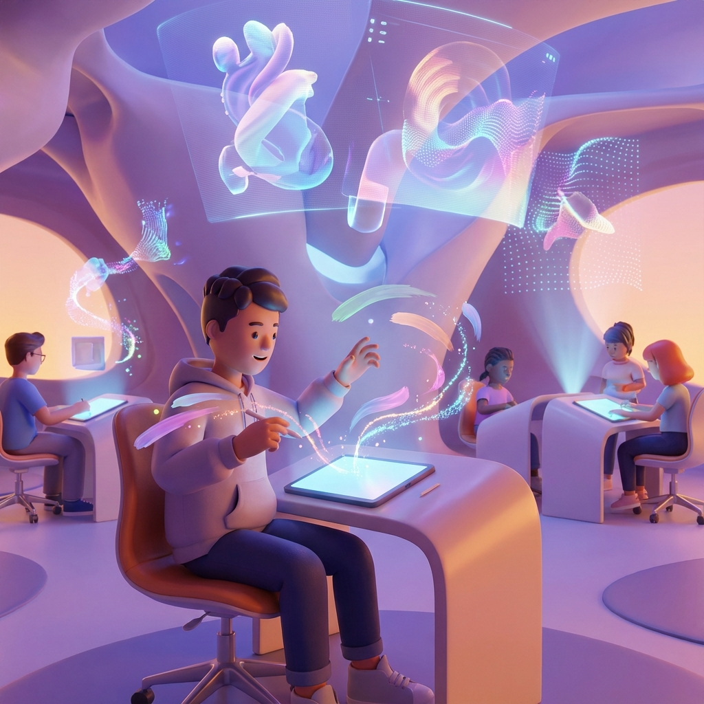

Jak využít DALL-E, Midjourney a další nástroje pro školní projekty a rozvoj kreativního myšlení. Vizuální komunikace je dnes klíčová. AI generátory obrázků umožňují každému vytvořit profesionální grafiku během několika sekund.
🎨 Populární nástroje
DALL-E 3 (v ChatGPT)
Nejdostupnější a velmi schopný. Skvěle rozumí kontextu a češtině. Ideální pro začátečníky.
Vyzkoušet v ChatGPT →Midjourney
Nejvyšší umělecká kvalita, ale běží přes Discord a je placený. Pro pokročilé tvůrce.
Web Midjourney →Bing Image Creator
Zdarma (s limity), běží na DALL-E 3. Dobrá alternativa pro studenty.
Vyzkoušet Bing Creator →Canva Magic Media
Integrované přímo v Canvě. Skvělé pro vytváření prvků do prezentací.
Otevřít Canvu →Nano Banana
Nový a rychlý generátor poháněný Google Gemini technologií. Vyniká v konzistenci postav a přesných úpravách.
Vyzkoušet Nano Banana →Leonardo.ai
Skvělá volba pro herní grafiku a umělecké styly. Nabízí denní kredity zdarma a pokročilé nastavení.
Zkusit Leonardo.ai →Adobe Firefly
Bezpečný pro komerční použití, skvělý na textové efekty a fotorealistické úpravy přímo v prohlížeči.
Vyzkoušet Firefly →🏫 Využití ve výuce
1. Vizualizace historie
Studenti mohou vytvořit vizuální reprezentace historických momentů pro prezentace, což pomáhá lépe pochopit a zapamatovat si látku.
2. Ilustrace literárních děl
Prompt: "Scéna z Romea a Julie, renesanční Verona, balkón, měsíční svit, romantická atmosféra"
Vytváření vizuálních interpretací knih podporuje hlubší porozumění textu a kreativitu.
3. Vědecké koncepty
Prompt: "Struktura DNA molekuly, detailní vizualizace, vzdělávací styl, popisky, barevné rozlišení"
Složité vědecké koncepty se stávají přístupnějšími skrze vizuální reprezentaci.
4. Prezentace a infografiky
- Vytváření originálních ilustrací pro PowerPoint
- Designové prvky pro postery a letáky
- Ikony a grafika pro webové projekty
5. Kreativní psaní
Vygenerujte obrázek jako inspiraci pro příběh. Nebo naopak - napište příběh a pak ho vizualizujte pomocí AI.
✍️ Jak psát efektivní prompty
🎯 Základní struktura promptu
- Předmět: Co chcete zobrazit (osoba, místo, věc)
- Akce: Co předmět dělá
- Prostředí: Kde se to děje
- Styl: Jak to má vypadat (realistické, malebné, pixelart...)
- Nálada: Jakou atmosféru vytvořit (dramatická, veselá, tajemná...)
- Detaily: Specifické požadavky (barvy, osvětlení, perspektiva...)
Příklady:
Špatný prompt: "kočka"
Dobrý prompt: "Oranžová kočka sedící na okně, pozorující déšť venku, útulná atmosféra, teplé osvětlení, realistický styl fotografie"
Pro školní projekt o Egyptu:
"Stavba pyramid ve starověkém Egyptě, stovky pracovníků tahajících obří kameny, pouštní krajina, žhavé slunce, realistický historický styl, vzdělávací ilustrace"
⚠️ Důležitá etická pravidla
1. Autorská práva a originalita
- AI obrázky NEJSOU zcela vaše - technicky vznikly pomocí AI
- Vždy uveďte, že obrázek byl vytvořen AI
- Netvrtce, že jste ho nakreslili ručně
2. Nepřijatelné použití
- ❌ Vytváření deepfakes reálných lidí
- ❌ Generování násilného nebo nevhodného obsahu
- ❌ Napodobování konkrétních umělců bez uvedení
- ❌ Dezinformace (falešné fotografie jako "pravdivé")
3. Citace AI generovaného obsahu
Při použití v projektu uveďte:
"Obrázek vygenerován pomocí [DALL-E/Midjourney/...], prompt: '[váš prompt]', [datum vytvoření]"
🎓 Kreativní cvičení pro studenty
Cvičení 1: Vizuální slovník
Vyberte 10 složitých slov z angličtiny a vytvořte pro každé vizuální reprezentaci. Pomůže vám to lépe si je zapamatovat!
Cvičení 2: Reimaginace
Vezměte známý obraz (Mona Lisa, Starry Night...) a přepište ho do jiného stylu nebo éry. "Mona Lisa jako cyberpunk portrét v roce 2080"
Cvičení 3: Příběh v obrázcích
Vytvořte sérii 4-6 obrázků, které vyprávějí krátký příběh. Pouze vizuálně, bez textu. Můžete to použít pro kreativní psaní nebo prezentaci.
Cvičení 4: Vědecká vizualizace
Vyberte složitý vědecký koncept (černá díra, evaporace, fotosyntéza...) a vytvořte serie obrázků, které ho vysvětlují krok za krokem.
🔮 Budoucnost AI generování
AI generátory se rychle zlepšují. Co můžeme očekávat?
- Ještě realističtější výsledky
- Video generování (už začíná!)
- 3D modely z textových popisů
- Interaktivní scény a animace
- Lepší kontrola nad detaily
🌟 Závěr
AI generátory obrázků jsou mocný nástroj pro kreativitu a vzdělávání. Umožňují materializovat představy, vizualizovat koncepty a vytvářet originální obsah. Ale nezapomeňte - AI je nástroj, který rozšiřuje vaši kreativitu, nenahrazuje ji.
Experimentujte, tvořte, učte se. A vždy používejte tyto nástroje odpovědně a eticky!